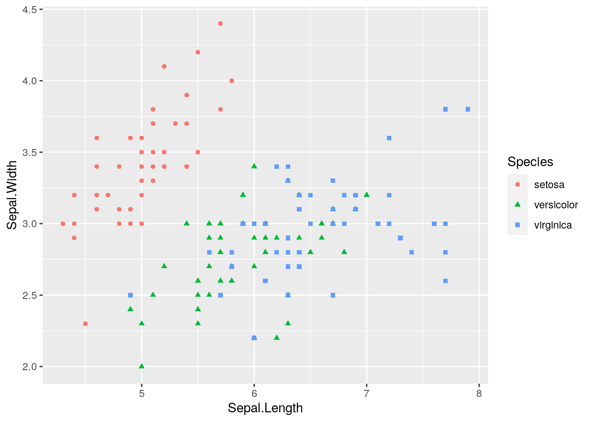
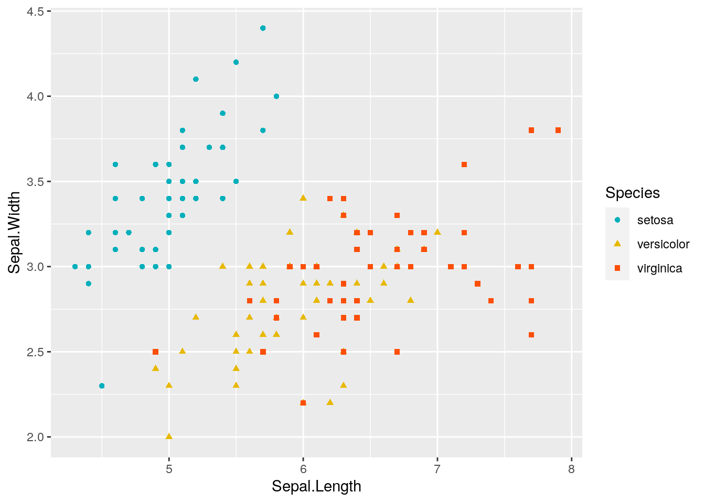
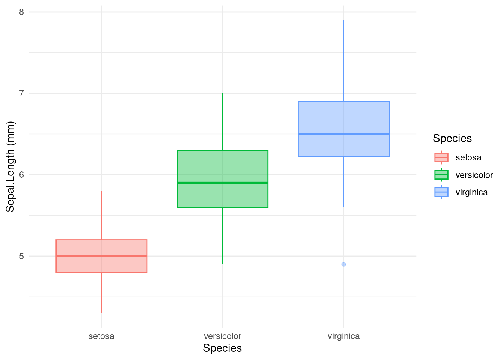

getwd()[1] "/home/rstudio/mydatalocal/course-material/practicals"To install R, you can go to https://cran.r-project.org/, and download the install file for your favorite operating system, click on the .exe, .dmg, .pkg, .deb, respectively for Windows, MacOS and Linux-debian.
And click on follow… until to reach successful installation Then download and install the IDE Rstudio https://posit.co/download/rstudio-desktop/.
Everything is free to download
Where am I?
To get the current working directory
getwd()[1] "/home/rstudio/mydatalocal/course-material/practicals"To change my working directory from the console
setwd("/path/to/my/fancy/project/")In Rstudio, we can change the working directory by navigating in folder in File panel and clicking on menu More
If you are using a Rproject, you don’t need to change your working directory.
How can I find documentation about function?
The command help() is the 911
# exemple with function read.table
help("read.table")
#other exemple of 911
example("plot")
??plot()You can install new packages by clicking directly in Rstudio or by command line (the best way for me)
install.packages("your_package") # for packages on CRAN mirrorFor packages from Bioconductor (specifically for bioinformatic):
BiocManager::install("your_package")or from github (using the package devtools)
devtools::install_github("your_package")To use functions from a specific package you can either load the entire package:
library("your package1")
library("your package2")
library("your package3")or call the function this way:
your_package::yourfunction()On your R session using cloud IFB all the necessary packages are installed
An expression is directly evaluated and the result is displayed on terminal Example :
2 + 3[1] 5sqrt(25)[1] 5An assignment is an expression stored in object or variable. In this example expression, constant, array, matrix, data frame, list Example :
a <- 2 + 3
b <- "madame"What happens when you execute this cell?
a[1] 5b[1] "madame"a <- 10
b <- "5"somme <- a + bWhy do we have an error ? I need to know the type of the object
str(a) num 10str(b) chr "5"What kind of information do we get?
We can also perform mathematical operations on numerical objects.
log(a) # to obtain the logarithm of a[1] 2.302585sqrt(a)# to obtain the square root of a[1] 3.162278# we can compare it
log(a) > sqrt(a)[1] FALSEVectors are objects composed by values with the same type or (i.e, numeric, characters…)
V1 <- c(2, 6, 9) # numeric vector
V2 <- c("monday", "Tuesday", "Wednesday") # character vector
V3 <- rep(6, 3) # repetition of the same value
V4 <- seq(1, 3, 0.1)# sequence of number
V5 <- 1:100
V5 [1] 1 2 3 4 5 6 7 8 9 10 11 12 13 14 15 16 17 18
[19] 19 20 21 22 23 24 25 26 27 28 29 30 31 32 33 34 35 36
[37] 37 38 39 40 41 42 43 44 45 46 47 48 49 50 51 52 53 54
[55] 55 56 57 58 59 60 61 62 63 64 65 66 67 68 69 70 71 72
[73] 73 74 75 76 77 78 79 80 81 82 83 84 85 86 87 88 89 90
[91] 91 92 93 94 95 96 97 98 99 100To know the number of value inside a vector
length(V1)[1] 3What do you think about V4?
Filter a vector according to criteria
# Example : with list of value (a vector)
x <- c(1, 3, 5, 3, 2, 1, 4, 6, 4, 7, 5, 4, 3)
# get element from 2 to 6
x[2:6][1] 3 5 3 2 1# get elements 3 et 5 from x.
x[c(3, 5)][1] 5 2# get value more than 20.
x[x > 5][1] 6 7# get value of x where x is equal to 21.
x[x == 5][1] 5 5# return elements form x the the value different from 5
x[x != 5] [1] 1 3 3 2 1 4 6 4 7 4 3Filter a vector according to several criteria
# 3 lists : ages, sexes et poids
age <- c(20, 30, 40,
15, 22, 24,
36, 38)
sexe <- c("F", "M", "F",
"M", "F", "M",
"F", "M")
poids <- c(75, 76, 73,
72, 64, 76,
73, 72)
# get value from age greater than 20 and less than 30.
age[age > 20 & age < 30][1] 22 24# Recovering "poids" for those who are older than 25 and female
poids[age > 25 & sexe == "F"][1] 73 73#Retrieve age values below 20 or above 30.
age[age < 20 | age > 30][1] 40 15 36 38Exo1
Considering the vector a such as a <- c("lannister", "targaryen", "baratheon", "starck", "greyjoy")
What is the length of the vector?
Try doing a[1:3]. What do you get?
Create a new vector b containing only lannister and starck.
Try doing a[-1]. What do you get?
Sort by alphabetical order using sort()
Exo2
Create a vector a containing all integers from 1 to 100.
Add the values 200, 201, 202 to the vector a.
Create a vector b containing all even integers from 2 to 100 using seq()
Data frames are objects composed by vector where the value are of different modes (i.e, numeric, characters…)
Load a data frame
data(iris)Visualise the data frame in a table
View(iris)Display its internal structure
str(iris)'data.frame': 150 obs. of 5 variables:
$ Sepal.Length: num 5.1 4.9 4.7 4.6 5 5.4 4.6 5 4.4 4.9 ...
$ Sepal.Width : num 3.5 3 3.2 3.1 3.6 3.9 3.4 3.4 2.9 3.1 ...
$ Petal.Length: num 1.4 1.4 1.3 1.5 1.4 1.7 1.4 1.5 1.4 1.5 ...
$ Petal.Width : num 0.2 0.2 0.2 0.2 0.2 0.4 0.3 0.2 0.2 0.1 ...
$ Species : Factor w/ 3 levels "setosa","versicolor",..: 1 1 1 1 1 1 1 1 1 1 ...What can we notice?
date <- c("1_monday", "2_Tuesday", "3_Wednesday",
"4_Thursday", "5_Friday", "6_Sturday",
"7_Sunday")
is.character(date)[1] TRUE# temperature in deg Celsius
temperature <- c(24, 27, 25,
22, 30, 21,
28)
is.numeric(temperature)[1] TRUE# rain in mm
rain <- c(1, 0, 0,
5, 2, 0,
0)
is.numeric(rain)[1] TRUE# make data.frame
df <- data.frame(date, temperature, rain)
str(df)'data.frame': 7 obs. of 3 variables:
$ date : chr "1_monday" "2_Tuesday" "3_Wednesday" "4_Thursday" ...
$ temperature: num 24 27 25 22 30 21 28
$ rain : num 1 0 0 5 2 0 0#To select a column or vector
df$temperature[1] 24 27 25 22 30 21 28df[, 2][1] 24 27 25 22 30 21 28# here we use list() instead of c()
# because there is multiple class in inside row
day <- list("8_monday", 29, 1)
new_def <- rbind(df, day)# add row to a data frame
new_def date temperature rain
1 1_monday 24 1
2 2_Tuesday 27 0
3 3_Wednesday 25 0
4 4_Thursday 22 5
5 5_Friday 30 2
6 6_Sturday 21 0
7 7_Sunday 28 0
8 8_monday 29 1Function are a compilation of command line with different instructions inside one object to simplify code. A function is composed by arguments and options.
function(argument1, argument2, option1, … ,option10)
head() # to know first line of your data frame
class()# return the class of the object. Ex : data.frame, matrix, list ....
str()# return the structure of the object. Ex : numeric, factor, character....
names()# to get or set the names of an object
sum() # for addition
min() # return the minimum of the vector
max() # return the minimum of the vector
row.names() # attribute names for lines of the data frame
colnames() # attribute names for column of the data frame
apply() # Returns a vector or array or list of values obtained by applying a function to margins of an array or matrix.Example function row.names, class and str
df2 <- data.frame(x = c(TRUE, FALSE, NA, NA), y = c(12, 34, 56, 78))
df2 x y
1 TRUE 12
2 FALSE 34
3 NA 56
4 NA 78row.names(df2) <- paste("row", 1 : 4, sep = "_")
df2 # what do you see x y
row_1 TRUE 12
row_2 FALSE 34
row_3 NA 56
row_4 NA 78class(df2)[1] "data.frame"str(df2)'data.frame': 4 obs. of 2 variables:
$ x: logi TRUE FALSE NA NA
$ y: num 12 34 56 78Example function apply
head(df) date temperature rain
1 1_monday 24 1
2 2_Tuesday 27 0
3 3_Wednesday 25 0
4 4_Thursday 22 5
5 5_Friday 30 2
6 6_Sturday 21 0class(df)[1] "data.frame"str(df)'data.frame': 7 obs. of 3 variables:
$ date : chr "1_monday" "2_Tuesday" "3_Wednesday" "4_Thursday" ...
$ temperature: num 24 27 25 22 30 21 28
$ rain : num 1 0 0 5 2 0 0# return mean for the numerical column of the data.frame. apply(data,margin,fun).
# For margin parameter the value 1 return mean for each row,
# for margin=2 return mean for each selected column.
apply(df[, 2:3], 2, mean)temperature rain
25.285714 1.142857 Exo 3
From data set iris in package datasets** Load package datasets and load data set iris using data()
sd())dplyr is part of the library set named tidyverse (contraction of “tidy” and “universe”, it’s a tidy universe). tidyverse packages are designed to work together and thus follow the same code logic and a common grammar.
The pipe, %>%, is one of the useful elements of the tidyverse. It allows to structure sequences of operations by minimizing the creation of intermediate objects and by facilitating the addition of a step anywhere in this sequence. Note that from R 4.1 you can use a new pipe, |> without the need of loading any library.
The most commonly used tidyverse packages are loaded in your session:
tidyverse::tidyverse_packages() [1] "broom" "conflicted" "cli" "dbplyr"
[5] "dplyr" "dtplyr" "forcats" "ggplot2"
[9] "googledrive" "googlesheets4" "haven" "hms"
[13] "httr" "jsonlite" "lubridate" "magrittr"
[17] "modelr" "pillar" "purrr" "ragg"
[21] "readr" "readxl" "reprex" "rlang"
[25] "rstudioapi" "rvest" "stringr" "tibble"
[29] "tidyr" "xml2" "tidyverse" library(tidyverse)── Attaching core tidyverse packages ──────────────────────── tidyverse 2.0.0 ──
✔ dplyr 1.1.2 ✔ readr 2.1.4
✔ forcats 1.0.0 ✔ stringr 1.5.0
✔ ggplot2 3.4.3 ✔ tibble 3.2.1
✔ lubridate 1.9.2 ✔ tidyr 1.3.0
✔ purrr 1.0.2
── Conflicts ────────────────────────────────────────── tidyverse_conflicts() ──
✖ dplyr::filter() masks stats::filter()
✖ dplyr::lag() masks stats::lag()
ℹ Use the conflicted package (<http://conflicted.r-lib.org/>) to force all conflicts to become errorsdata("iris")
#To select a variable with tidyverse
dplyr::select(iris, Species) Species
1 setosa
2 setosa
3 setosa
4 setosa
5 setosa
6 setosa
7 setosa
8 setosa
9 setosa
10 setosa
11 setosa
12 setosa
13 setosa
14 setosa
15 setosa
16 setosa
17 setosa
18 setosa
19 setosa
20 setosa
21 setosa
22 setosa
23 setosa
24 setosa
25 setosa
26 setosa
27 setosa
28 setosa
29 setosa
30 setosa
31 setosa
32 setosa
33 setosa
34 setosa
35 setosa
36 setosa
37 setosa
38 setosa
39 setosa
40 setosa
41 setosa
42 setosa
43 setosa
44 setosa
45 setosa
46 setosa
47 setosa
48 setosa
49 setosa
50 setosa
51 versicolor
52 versicolor
53 versicolor
54 versicolor
55 versicolor
56 versicolor
57 versicolor
58 versicolor
59 versicolor
60 versicolor
61 versicolor
62 versicolor
63 versicolor
64 versicolor
65 versicolor
66 versicolor
67 versicolor
68 versicolor
69 versicolor
70 versicolor
71 versicolor
72 versicolor
73 versicolor
74 versicolor
75 versicolor
76 versicolor
77 versicolor
78 versicolor
79 versicolor
80 versicolor
81 versicolor
82 versicolor
83 versicolor
84 versicolor
85 versicolor
86 versicolor
87 versicolor
88 versicolor
89 versicolor
90 versicolor
91 versicolor
92 versicolor
93 versicolor
94 versicolor
95 versicolor
96 versicolor
97 versicolor
98 versicolor
99 versicolor
100 versicolor
101 virginica
102 virginica
103 virginica
104 virginica
105 virginica
106 virginica
107 virginica
108 virginica
109 virginica
110 virginica
111 virginica
112 virginica
113 virginica
114 virginica
115 virginica
116 virginica
117 virginica
118 virginica
119 virginica
120 virginica
121 virginica
122 virginica
123 virginica
124 virginica
125 virginica
126 virginica
127 virginica
128 virginica
129 virginica
130 virginica
131 virginica
132 virginica
133 virginica
134 virginica
135 virginica
136 virginica
137 virginica
138 virginica
139 virginica
140 virginica
141 virginica
142 virginica
143 virginica
144 virginica
145 virginica
146 virginica
147 virginica
148 virginica
149 virginica
150 virginica#To select several variables with tidyverse
dplyr::select(iris,Species, Sepal.Length, Sepal.Width) Species Sepal.Length Sepal.Width
1 setosa 5.1 3.5
2 setosa 4.9 3.0
3 setosa 4.7 3.2
4 setosa 4.6 3.1
5 setosa 5.0 3.6
6 setosa 5.4 3.9
7 setosa 4.6 3.4
8 setosa 5.0 3.4
9 setosa 4.4 2.9
10 setosa 4.9 3.1
11 setosa 5.4 3.7
12 setosa 4.8 3.4
13 setosa 4.8 3.0
14 setosa 4.3 3.0
15 setosa 5.8 4.0
16 setosa 5.7 4.4
17 setosa 5.4 3.9
18 setosa 5.1 3.5
19 setosa 5.7 3.8
20 setosa 5.1 3.8
21 setosa 5.4 3.4
22 setosa 5.1 3.7
23 setosa 4.6 3.6
24 setosa 5.1 3.3
25 setosa 4.8 3.4
26 setosa 5.0 3.0
27 setosa 5.0 3.4
28 setosa 5.2 3.5
29 setosa 5.2 3.4
30 setosa 4.7 3.2
31 setosa 4.8 3.1
32 setosa 5.4 3.4
33 setosa 5.2 4.1
34 setosa 5.5 4.2
35 setosa 4.9 3.1
36 setosa 5.0 3.2
37 setosa 5.5 3.5
38 setosa 4.9 3.6
39 setosa 4.4 3.0
40 setosa 5.1 3.4
41 setosa 5.0 3.5
42 setosa 4.5 2.3
43 setosa 4.4 3.2
44 setosa 5.0 3.5
45 setosa 5.1 3.8
46 setosa 4.8 3.0
47 setosa 5.1 3.8
48 setosa 4.6 3.2
49 setosa 5.3 3.7
50 setosa 5.0 3.3
51 versicolor 7.0 3.2
52 versicolor 6.4 3.2
53 versicolor 6.9 3.1
54 versicolor 5.5 2.3
55 versicolor 6.5 2.8
56 versicolor 5.7 2.8
57 versicolor 6.3 3.3
58 versicolor 4.9 2.4
59 versicolor 6.6 2.9
60 versicolor 5.2 2.7
61 versicolor 5.0 2.0
62 versicolor 5.9 3.0
63 versicolor 6.0 2.2
64 versicolor 6.1 2.9
65 versicolor 5.6 2.9
66 versicolor 6.7 3.1
67 versicolor 5.6 3.0
68 versicolor 5.8 2.7
69 versicolor 6.2 2.2
70 versicolor 5.6 2.5
71 versicolor 5.9 3.2
72 versicolor 6.1 2.8
73 versicolor 6.3 2.5
74 versicolor 6.1 2.8
75 versicolor 6.4 2.9
76 versicolor 6.6 3.0
77 versicolor 6.8 2.8
78 versicolor 6.7 3.0
79 versicolor 6.0 2.9
80 versicolor 5.7 2.6
81 versicolor 5.5 2.4
82 versicolor 5.5 2.4
83 versicolor 5.8 2.7
84 versicolor 6.0 2.7
85 versicolor 5.4 3.0
86 versicolor 6.0 3.4
87 versicolor 6.7 3.1
88 versicolor 6.3 2.3
89 versicolor 5.6 3.0
90 versicolor 5.5 2.5
91 versicolor 5.5 2.6
92 versicolor 6.1 3.0
93 versicolor 5.8 2.6
94 versicolor 5.0 2.3
95 versicolor 5.6 2.7
96 versicolor 5.7 3.0
97 versicolor 5.7 2.9
98 versicolor 6.2 2.9
99 versicolor 5.1 2.5
100 versicolor 5.7 2.8
101 virginica 6.3 3.3
102 virginica 5.8 2.7
103 virginica 7.1 3.0
104 virginica 6.3 2.9
105 virginica 6.5 3.0
106 virginica 7.6 3.0
107 virginica 4.9 2.5
108 virginica 7.3 2.9
109 virginica 6.7 2.5
110 virginica 7.2 3.6
111 virginica 6.5 3.2
112 virginica 6.4 2.7
113 virginica 6.8 3.0
114 virginica 5.7 2.5
115 virginica 5.8 2.8
116 virginica 6.4 3.2
117 virginica 6.5 3.0
118 virginica 7.7 3.8
119 virginica 7.7 2.6
120 virginica 6.0 2.2
121 virginica 6.9 3.2
122 virginica 5.6 2.8
123 virginica 7.7 2.8
124 virginica 6.3 2.7
125 virginica 6.7 3.3
126 virginica 7.2 3.2
127 virginica 6.2 2.8
128 virginica 6.1 3.0
129 virginica 6.4 2.8
130 virginica 7.2 3.0
131 virginica 7.4 2.8
132 virginica 7.9 3.8
133 virginica 6.4 2.8
134 virginica 6.3 2.8
135 virginica 6.1 2.6
136 virginica 7.7 3.0
137 virginica 6.3 3.4
138 virginica 6.4 3.1
139 virginica 6.0 3.0
140 virginica 6.9 3.1
141 virginica 6.7 3.1
142 virginica 6.9 3.1
143 virginica 5.8 2.7
144 virginica 6.8 3.2
145 virginica 6.7 3.3
146 virginica 6.7 3.0
147 virginica 6.3 2.5
148 virginica 6.5 3.0
149 virginica 6.2 3.4
150 virginica 5.9 3.0# To select several lines inside data frame
dplyr::slice(iris, 22:30) Sepal.Length Sepal.Width Petal.Length Petal.Width Species
1 5.1 3.7 1.5 0.4 setosa
2 4.6 3.6 1.0 0.2 setosa
3 5.1 3.3 1.7 0.5 setosa
4 4.8 3.4 1.9 0.2 setosa
5 5.0 3.0 1.6 0.2 setosa
6 5.0 3.4 1.6 0.4 setosa
7 5.2 3.5 1.5 0.2 setosa
8 5.2 3.4 1.4 0.2 setosa
9 4.7 3.2 1.6 0.2 setosa# I can affect it to an object
subdata <- dplyr::slice(iris, 22:30)
#or choosing different lines
myline <- c(22, 38, 120) # I build a vector containing the line that I want
dplyr::slice(iris,myline) Sepal.Length Sepal.Width Petal.Length Petal.Width Species
1 5.1 3.7 1.5 0.4 setosa
2 4.9 3.6 1.4 0.1 setosa
3 6.0 2.2 5.0 1.5 virginicaThe pipe |> , or %>%, is one of the useful elements of the tidyverse. It allows to structure sequences of operations by minimizing the creation of intermediate objects and by facilitating the addition of a step anywhere in this sequence.
The useful command to manage data frame : 1) select() to select vector or variable from a data frame ; 2) filter() is used to subset a data frame, retaining all rows that satisfy your conditions ; mutate() adds new variables and preserves existing ones.
library(dplyr)
iris %>%
filter(Sepal.Length > 6) %>% # filtered using size of Sepal Length
filter(Species == "versicolor") # and the species Sepal.Length Sepal.Width Petal.Length Petal.Width Species
1 7.0 3.2 4.7 1.4 versicolor
2 6.4 3.2 4.5 1.5 versicolor
3 6.9 3.1 4.9 1.5 versicolor
4 6.5 2.8 4.6 1.5 versicolor
5 6.3 3.3 4.7 1.6 versicolor
6 6.6 2.9 4.6 1.3 versicolor
7 6.1 2.9 4.7 1.4 versicolor
8 6.7 3.1 4.4 1.4 versicolor
9 6.2 2.2 4.5 1.5 versicolor
10 6.1 2.8 4.0 1.3 versicolor
11 6.3 2.5 4.9 1.5 versicolor
12 6.1 2.8 4.7 1.2 versicolor
13 6.4 2.9 4.3 1.3 versicolor
14 6.6 3.0 4.4 1.4 versicolor
15 6.8 2.8 4.8 1.4 versicolor
16 6.7 3.0 5.0 1.7 versicolor
17 6.7 3.1 4.7 1.5 versicolor
18 6.3 2.3 4.4 1.3 versicolor
19 6.1 3.0 4.6 1.4 versicolor
20 6.2 2.9 4.3 1.3 versicoloriris %>%
select(Sepal.Length, Species) %>%
mutate(Sepal.Length2 = Sepal.Length * 2) %>%
mutate(Sepal.Length2_squared = Sepal.Length2 * Sepal.Length2) Sepal.Length Species Sepal.Length2 Sepal.Length2_squared
1 5.1 setosa 10.2 104.04
2 4.9 setosa 9.8 96.04
3 4.7 setosa 9.4 88.36
4 4.6 setosa 9.2 84.64
5 5.0 setosa 10.0 100.00
6 5.4 setosa 10.8 116.64
7 4.6 setosa 9.2 84.64
8 5.0 setosa 10.0 100.00
9 4.4 setosa 8.8 77.44
10 4.9 setosa 9.8 96.04
11 5.4 setosa 10.8 116.64
12 4.8 setosa 9.6 92.16
13 4.8 setosa 9.6 92.16
14 4.3 setosa 8.6 73.96
15 5.8 setosa 11.6 134.56
16 5.7 setosa 11.4 129.96
17 5.4 setosa 10.8 116.64
18 5.1 setosa 10.2 104.04
19 5.7 setosa 11.4 129.96
20 5.1 setosa 10.2 104.04
21 5.4 setosa 10.8 116.64
22 5.1 setosa 10.2 104.04
23 4.6 setosa 9.2 84.64
24 5.1 setosa 10.2 104.04
25 4.8 setosa 9.6 92.16
26 5.0 setosa 10.0 100.00
27 5.0 setosa 10.0 100.00
28 5.2 setosa 10.4 108.16
29 5.2 setosa 10.4 108.16
30 4.7 setosa 9.4 88.36
31 4.8 setosa 9.6 92.16
32 5.4 setosa 10.8 116.64
33 5.2 setosa 10.4 108.16
34 5.5 setosa 11.0 121.00
35 4.9 setosa 9.8 96.04
36 5.0 setosa 10.0 100.00
37 5.5 setosa 11.0 121.00
38 4.9 setosa 9.8 96.04
39 4.4 setosa 8.8 77.44
40 5.1 setosa 10.2 104.04
41 5.0 setosa 10.0 100.00
42 4.5 setosa 9.0 81.00
43 4.4 setosa 8.8 77.44
44 5.0 setosa 10.0 100.00
45 5.1 setosa 10.2 104.04
46 4.8 setosa 9.6 92.16
47 5.1 setosa 10.2 104.04
48 4.6 setosa 9.2 84.64
49 5.3 setosa 10.6 112.36
50 5.0 setosa 10.0 100.00
51 7.0 versicolor 14.0 196.00
52 6.4 versicolor 12.8 163.84
53 6.9 versicolor 13.8 190.44
54 5.5 versicolor 11.0 121.00
55 6.5 versicolor 13.0 169.00
56 5.7 versicolor 11.4 129.96
57 6.3 versicolor 12.6 158.76
58 4.9 versicolor 9.8 96.04
59 6.6 versicolor 13.2 174.24
60 5.2 versicolor 10.4 108.16
61 5.0 versicolor 10.0 100.00
62 5.9 versicolor 11.8 139.24
63 6.0 versicolor 12.0 144.00
64 6.1 versicolor 12.2 148.84
65 5.6 versicolor 11.2 125.44
66 6.7 versicolor 13.4 179.56
67 5.6 versicolor 11.2 125.44
68 5.8 versicolor 11.6 134.56
69 6.2 versicolor 12.4 153.76
70 5.6 versicolor 11.2 125.44
71 5.9 versicolor 11.8 139.24
72 6.1 versicolor 12.2 148.84
73 6.3 versicolor 12.6 158.76
74 6.1 versicolor 12.2 148.84
75 6.4 versicolor 12.8 163.84
76 6.6 versicolor 13.2 174.24
77 6.8 versicolor 13.6 184.96
78 6.7 versicolor 13.4 179.56
79 6.0 versicolor 12.0 144.00
80 5.7 versicolor 11.4 129.96
81 5.5 versicolor 11.0 121.00
82 5.5 versicolor 11.0 121.00
83 5.8 versicolor 11.6 134.56
84 6.0 versicolor 12.0 144.00
85 5.4 versicolor 10.8 116.64
86 6.0 versicolor 12.0 144.00
87 6.7 versicolor 13.4 179.56
88 6.3 versicolor 12.6 158.76
89 5.6 versicolor 11.2 125.44
90 5.5 versicolor 11.0 121.00
91 5.5 versicolor 11.0 121.00
92 6.1 versicolor 12.2 148.84
93 5.8 versicolor 11.6 134.56
94 5.0 versicolor 10.0 100.00
95 5.6 versicolor 11.2 125.44
96 5.7 versicolor 11.4 129.96
97 5.7 versicolor 11.4 129.96
98 6.2 versicolor 12.4 153.76
99 5.1 versicolor 10.2 104.04
100 5.7 versicolor 11.4 129.96
101 6.3 virginica 12.6 158.76
102 5.8 virginica 11.6 134.56
103 7.1 virginica 14.2 201.64
104 6.3 virginica 12.6 158.76
105 6.5 virginica 13.0 169.00
106 7.6 virginica 15.2 231.04
107 4.9 virginica 9.8 96.04
108 7.3 virginica 14.6 213.16
109 6.7 virginica 13.4 179.56
110 7.2 virginica 14.4 207.36
111 6.5 virginica 13.0 169.00
112 6.4 virginica 12.8 163.84
113 6.8 virginica 13.6 184.96
114 5.7 virginica 11.4 129.96
115 5.8 virginica 11.6 134.56
116 6.4 virginica 12.8 163.84
117 6.5 virginica 13.0 169.00
118 7.7 virginica 15.4 237.16
119 7.7 virginica 15.4 237.16
120 6.0 virginica 12.0 144.00
121 6.9 virginica 13.8 190.44
122 5.6 virginica 11.2 125.44
123 7.7 virginica 15.4 237.16
124 6.3 virginica 12.6 158.76
125 6.7 virginica 13.4 179.56
126 7.2 virginica 14.4 207.36
127 6.2 virginica 12.4 153.76
128 6.1 virginica 12.2 148.84
129 6.4 virginica 12.8 163.84
130 7.2 virginica 14.4 207.36
131 7.4 virginica 14.8 219.04
132 7.9 virginica 15.8 249.64
133 6.4 virginica 12.8 163.84
134 6.3 virginica 12.6 158.76
135 6.1 virginica 12.2 148.84
136 7.7 virginica 15.4 237.16
137 6.3 virginica 12.6 158.76
138 6.4 virginica 12.8 163.84
139 6.0 virginica 12.0 144.00
140 6.9 virginica 13.8 190.44
141 6.7 virginica 13.4 179.56
142 6.9 virginica 13.8 190.44
143 5.8 virginica 11.6 134.56
144 6.8 virginica 13.6 184.96
145 6.7 virginica 13.4 179.56
146 6.7 virginica 13.4 179.56
147 6.3 virginica 12.6 158.76
148 6.5 virginica 13.0 169.00
149 6.2 virginica 12.4 153.76
150 5.9 virginica 11.8 139.24iris %>%
select(Sepal.Length, Species) %>%
mutate(Sepal.Length = Sepal.Length / mean(Sepal.Length, na.rm = TRUE)) Sepal.Length Species
1 0.8727895 setosa
2 0.8385625 setosa
3 0.8043354 setosa
4 0.7872219 setosa
5 0.8556760 setosa
6 0.9241301 setosa
7 0.7872219 setosa
8 0.8556760 setosa
9 0.7529949 setosa
10 0.8385625 setosa
11 0.9241301 setosa
12 0.8214489 setosa
13 0.8214489 setosa
14 0.7358813 setosa
15 0.9925841 setosa
16 0.9754706 setosa
17 0.9241301 setosa
18 0.8727895 setosa
19 0.9754706 setosa
20 0.8727895 setosa
21 0.9241301 setosa
22 0.8727895 setosa
23 0.7872219 setosa
24 0.8727895 setosa
25 0.8214489 setosa
26 0.8556760 setosa
27 0.8556760 setosa
28 0.8899030 setosa
29 0.8899030 setosa
30 0.8043354 setosa
31 0.8214489 setosa
32 0.9241301 setosa
33 0.8899030 setosa
34 0.9412436 setosa
35 0.8385625 setosa
36 0.8556760 setosa
37 0.9412436 setosa
38 0.8385625 setosa
39 0.7529949 setosa
40 0.8727895 setosa
41 0.8556760 setosa
42 0.7701084 setosa
43 0.7529949 setosa
44 0.8556760 setosa
45 0.8727895 setosa
46 0.8214489 setosa
47 0.8727895 setosa
48 0.7872219 setosa
49 0.9070165 setosa
50 0.8556760 setosa
51 1.1979464 versicolor
52 1.0952653 versicolor
53 1.1808329 versicolor
54 0.9412436 versicolor
55 1.1123788 versicolor
56 0.9754706 versicolor
57 1.0781517 versicolor
58 0.8385625 versicolor
59 1.1294923 versicolor
60 0.8899030 versicolor
61 0.8556760 versicolor
62 1.0096977 versicolor
63 1.0268112 versicolor
64 1.0439247 versicolor
65 0.9583571 versicolor
66 1.1466058 versicolor
67 0.9583571 versicolor
68 0.9925841 versicolor
69 1.0610382 versicolor
70 0.9583571 versicolor
71 1.0096977 versicolor
72 1.0439247 versicolor
73 1.0781517 versicolor
74 1.0439247 versicolor
75 1.0952653 versicolor
76 1.1294923 versicolor
77 1.1637193 versicolor
78 1.1466058 versicolor
79 1.0268112 versicolor
80 0.9754706 versicolor
81 0.9412436 versicolor
82 0.9412436 versicolor
83 0.9925841 versicolor
84 1.0268112 versicolor
85 0.9241301 versicolor
86 1.0268112 versicolor
87 1.1466058 versicolor
88 1.0781517 versicolor
89 0.9583571 versicolor
90 0.9412436 versicolor
91 0.9412436 versicolor
92 1.0439247 versicolor
93 0.9925841 versicolor
94 0.8556760 versicolor
95 0.9583571 versicolor
96 0.9754706 versicolor
97 0.9754706 versicolor
98 1.0610382 versicolor
99 0.8727895 versicolor
100 0.9754706 versicolor
101 1.0781517 virginica
102 0.9925841 virginica
103 1.2150599 virginica
104 1.0781517 virginica
105 1.1123788 virginica
106 1.3006275 virginica
107 0.8385625 virginica
108 1.2492869 virginica
109 1.1466058 virginica
110 1.2321734 virginica
111 1.1123788 virginica
112 1.0952653 virginica
113 1.1637193 virginica
114 0.9754706 virginica
115 0.9925841 virginica
116 1.0952653 virginica
117 1.1123788 virginica
118 1.3177410 virginica
119 1.3177410 virginica
120 1.0268112 virginica
121 1.1808329 virginica
122 0.9583571 virginica
123 1.3177410 virginica
124 1.0781517 virginica
125 1.1466058 virginica
126 1.2321734 virginica
127 1.0610382 virginica
128 1.0439247 virginica
129 1.0952653 virginica
130 1.2321734 virginica
131 1.2664005 virginica
132 1.3519681 virginica
133 1.0952653 virginica
134 1.0781517 virginica
135 1.0439247 virginica
136 1.3177410 virginica
137 1.0781517 virginica
138 1.0952653 virginica
139 1.0268112 virginica
140 1.1808329 virginica
141 1.1466058 virginica
142 1.1808329 virginica
143 0.9925841 virginica
144 1.1637193 virginica
145 1.1466058 virginica
146 1.1466058 virginica
147 1.0781517 virginica
148 1.1123788 virginica
149 1.0610382 virginica
150 1.0096977 virginica#Sepal.Length_norm is calculated using the mean of the Sepal.Length for all data set.
iris %>%
select(Sepal.Length, Species) %>%
group_by(Species) %>%
mutate(Sepal.Length_norm = Sepal.Length / mean(Sepal.Length, na.rm = TRUE))# A tibble: 150 × 3
# Groups: Species [3]
Sepal.Length Species Sepal.Length_norm
<dbl> <fct> <dbl>
1 5.1 setosa 1.02
2 4.9 setosa 0.979
3 4.7 setosa 0.939
4 4.6 setosa 0.919
5 5 setosa 0.999
6 5.4 setosa 1.08
7 4.6 setosa 0.919
8 5 setosa 0.999
9 4.4 setosa 0.879
10 4.9 setosa 0.979
# ℹ 140 more rows# In this last example Sepal.Length_norm is calculated using the mean of the Sepal.Length for each species using group_by()These commands are non-persistent, no changes are made on the original iris data frame. If you want to store it, you must assign your changes to a object
iris_modif <- iris %>%
select(Sepal.Length, Species) %>%
group_by(Species) %>%
mutate(Sepal.Length_norm = Sepal.Length / mean(Sepal.Length, na.rm = TRUE))To import data set, the function read.table() or read.csv() are commonly used.
read.table(file, header = FALSE, sep = "", dec = ".", ...)
The main parameter are :
ds <- read.table(here::here("data",
"rforbeginers",
"exemple_read.txt"),
header = TRUE,
sep = ";",
dec = ",")Why I use the parameter header=TRUE ?
The function is similar to read.table()
write.table(x, file = "", sep = " ",na = "NA", dec = ".", ... )
write.table(ds, "ds.txt", sep = "\t", dec = ".")To keep our working directory tidy, we now delete ds.txt
file.remove("ds.txt")[1] TRUEExo 4
ggplot2 is a powerfull packages to make a very smart graph “ready to use” for publication. gg means grammar and graph, a concept which describe a graph using grammar. This package belong to tidyverse according to dplyr. According to the ggplot2 concept, a graph can be divided into different basic parts:Plot = data + Aesthetics + Geometry
library(ggplot2)
# scatter plot
ggplot(data = iris, aes(Sepal.Length, Sepal.Width)) + # what I want to represent
geom_point() # how I represent it
# We can calorize and give a shape by month
# scatter plot
ggplot(data = iris, aes(Sepal.Length, Sepal.Width)) +
geom_point(aes(color = Species, shape = Species)) # shape is the same thing with classical plot on R
# You can change manually color with la fonction scale_color_manual()
ggplot(data = iris, aes(Sepal.Length, Sepal.Width)) +
geom_point(aes(color = Species, shape = Species)) +
scale_color_manual(values = c("#00AFBB", "#E7B800", "#FC4E07"))
#Boxplot
ggplot(data = iris, aes(Species, Sepal.Length)) + # what I want to represent
geom_boxplot(aes(color = Species, fill = Species), alpha=0.4) + # how I represent it. Here I changed geometry using boxplot.
labs(x ="Species", y = "Sepal.Length (mm)") +
theme_minimal()
Save your plot
Using the function pdf()
Firstly you have to store plot inside and object
#Boxplot
g1 <- ggplot(data = iris, aes(Species, Sepal.Length)) + # what I want to represent
geom_boxplot(aes(color = Species, fill = Species), alpha = 0.4) +# how I represent it. Here I changed geometry using boxplot.
labs(x = "Species", y = "Sepal.Length (mm)") +
theme_minimal()pdf("yourfile.pdf")
g1
dev.off()png
2 or ggplot2::ggsave()
ggsave("yourfile2.pdf", g1)Saving 7 x 5 in image